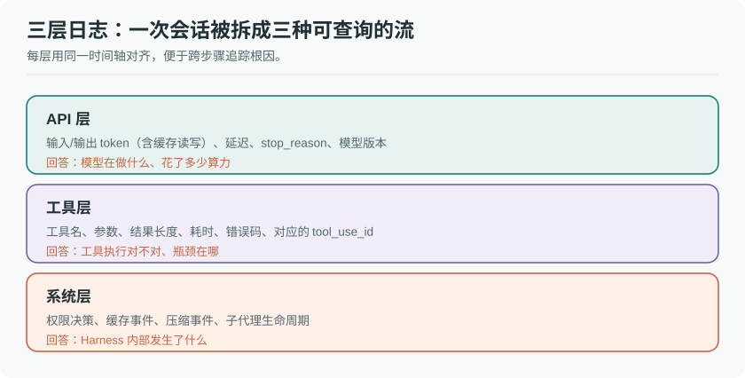
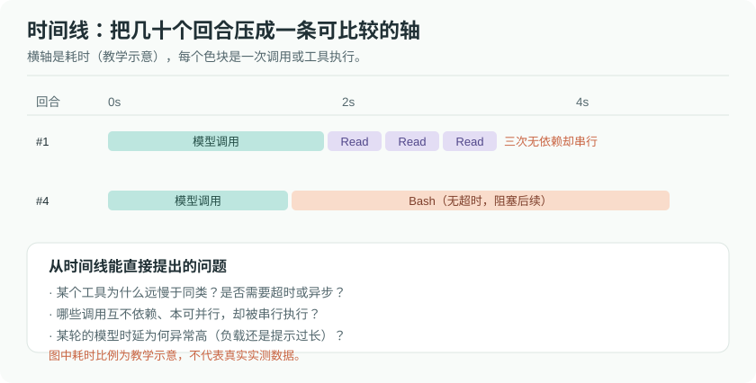

Agent 调试与可观测性：让失败可被追踪
把可观测性当作功能需求从第一天设计：用三层日志、token 成本归因和时间线，回答“它做了什么、花了多少、在哪一步错了”。
为什么 Agent 调试比普通程序难
断点、print、看变量——这套方法在 Agent 上几乎全面失效，原因有三：
- 非确定性：同一输入两次运行可以不同，bug 可能不复现。可观测性靠记录证据而非重现现场。
- 多步因果链：错误往往在第 1 步埋下、第 10 步才显现。没有跨步骤追踪，你连根因在哪都找不到。
- 隐藏状态：模型的内部推理不透明；你只能通过它的输出（工具参数、最终回答）推测发生了什么。
因此调试心态要变：不是“找到 bug 再消灭它”，而是收集证据再推断。可观测性应作为功能需求在设计时就纳入，而不是事后补。
三层日志：API、工具、系统
把日志分成三层，每层回答不同问题、面向不同受众，并用同一时间轴对齐，这是最实用的组织方式：
| 层级 | 记录内容 | 回答的问题 |
|---|---|---|
| API | 输入/输出 token（含缓存读写）、延迟、stop_reason、模型版本 | 模型在做什么、花了多少 |
| 工具 | 工具名、参数、结果长度、耗时、错误、tool_use_id | 工具执行对不对、瓶颈在哪 |
| 系统 | 权限决策、缓存事件、压缩事件、子代理生命周期 | Harness 内部发生了什么 |
用 JSON Lines 写文件（给机器 grep/jq），终端另外呈现可读摘要（给人），两种输出互不干扰。

Token 成本归因：拆开输入的构成
不做 token 追踪，就是在闭着眼睛花钱。但更重要的是把输入拆开，而不是只看总数：
每轮成本 ≈ 缓存读 token × 缓存读单价
+ 缓存写/未缓存输入 token × 输入单价
+ 输出 token × 输出单价缓存读写与新鲜输入的单价通常不同，因此“缓存更多”不等于“更便宜”也不等于“上下文更小”（见第 20 章）。具体单价请以你所用模型的官方定价页为准——它是随模型与时间变化的参数，不应写死在教程里。
归因的目标是找出浪费模式：
- 冗余工具结果：工具返回 50KB，模型只用到其中几百字节。
- 过大的系统提示/工具定义：每轮都整份重发，可考虑分场景裁剪或按需加载。
- 无意义重试：超时后用完全相同的参数重试，而不改变策略。
旧稿的定价数字已移除
旧稿列出“$0.10/$1.00/$5.00 每百万 token”及若干估算成本表。这些是模型与时间相关的价格，且表内 token 量为虚构，不能当作事实，因此本章改成公式化归因，具体单价以官方定价为准。
真实排错：tool_use_id 挂错了
一个典型 bug：Agent 反复对同一文件、同一位置做同样的 Edit，然后声称完成，但文件根本没变。排查顺序值得记住：
- 查 API 日志：模型确实返回了
tool_use，参数也对。 - 查工具日志：
Edit每次都执行成功。 - 打印下一轮模型实际看到的 messages（最关键、最容易被跳过的一步）。
结果是：响应里有多个 tool_use block，各有自己的 id；由于一个序列化 bug，tool_result 被挂到了错误的 tool_use_id 上。模型因此看不到它期待的对应结果，于是合理地重试。
证据分级
“模型看不到对应结果就会重试”是可观察行为——可在我们自己的请求日志与消息历史中验证；至于某个 id 不匹配时服务端是拒绝还是忽略，属实现细节，不要当成固定契约引用。修复只有一行：让 tool_result.tool_use_id 精确等于模型下发的 id。
教训：日志不仅要记“发生了什么”，还要记“你把它关联到了什么”。
执行时间线告诉我们什么
面对几十个回合、几千行 JSON，你最需要的是一张时间线：把模型调用、工具执行、用户交互按时间排在一条轴上，异常会自己浮出来。下图给出两个典型信号：一个无超时的工具阻塞了后续，以及三次互不依赖的 Read 被串行执行。

从时间线可以提出的问题：某个工具为何远慢于同类，是否需要超时或异步；哪些调用互不依赖、本可并行；某轮模型时延为何异常高（负载还是提示过长）。
面板该盯哪几个指标
不必上 Grafana；终端面板或静态 HTML 就够。盯四个数：
- token 用量：本轮输入/输出总量及缓存读/写字段（按 API 真实字段相加，别只取一个含计数）。
- 回合数：回合持续增长时，警惕上下文膨胀（见第 10、11 章）。
- 工具直方图：执行次数与平均耗时，快速识别慢工具与过度使用。
- 错误率趋势：工具失败率、API 错误率上升时提前干预。
def summarize(events):
api = [e for e in events if e["layer"] == "api"]
tools = [e for e in events if e["layer"] == "tool"]
return {
"input": sum(e["input_tokens"] for e in api), # 按需再拆分缓存字段
"output": sum(e["output_tokens"] for e in api),
"turn": len(api),
"tool_calls": len(tools),
"tool_errors": sum(1 for e in tools if not e["success"]),
}离线测试与练习
运行 python3 -m unittest discover -s examples -p 'test_*.py'，并给日志器写一组小测试：验证三层日志各自写到正确的 JSONL；一到多个 tool_use block 的 id 与 tool_result 一一对应；汇总函数对空输入不报错。
tool_use block 的响应，故意把两个 tool_result 的顺序对调，写出一个断言来捕捉这个错误，并解释为何“看起来结果都在”仍可能出错。官方资料与证据分级
- Anthropic: Handle tool calls —
tool_use/tool_result与 id 关联 - Anthropic: Token Counting — 输入 token 的测量方式
- Anthropic: Prompt Caching — 缓存读/写 token 分类
图 1、图 2 与文中 token/耗时数字均为教学示意，不含某次真实计费结果；具体定价与参数请以官方页面为准。